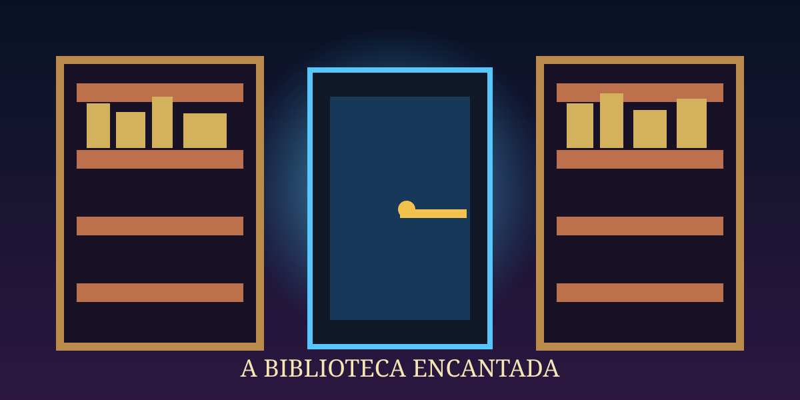
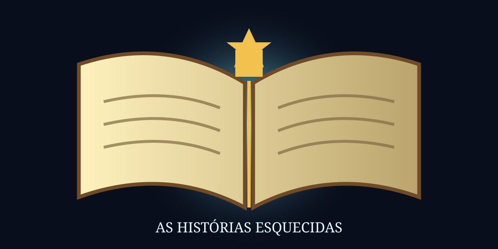
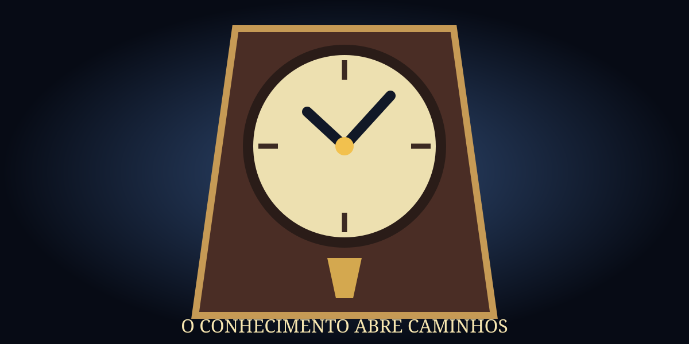
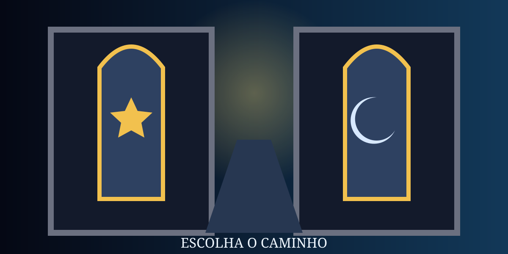
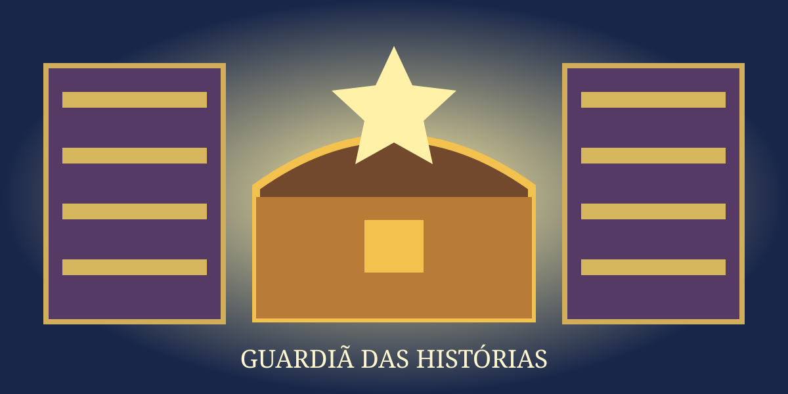
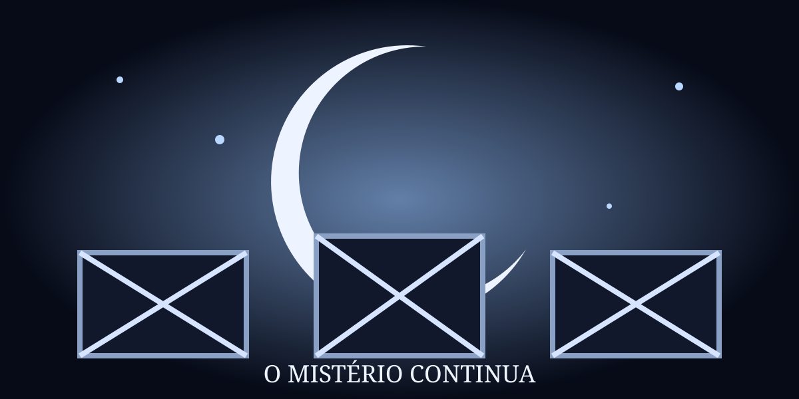

O Mistério da Biblioteca Encantada

Depois da aula, Mariana encontra uma chave dourada caída perto da biblioteca da escola. Ao entrar no lugar silencioso, percebe uma luz azul saindo de uma estante e escuta um relógio tocar treze vezes.

Entre os livros, Mariana encontra um volume chamado “As Histórias Esquecidas”. Quando aproxima a chave, o livro se abre sozinho e mostra um mapa incompleto.

O som vem de um relógio antigo. Atrás do pêndulo existe uma pequena fechadura, do tamanho exato da chave dourada. No mostrador, uma frase diz: “O conhecimento abre caminhos”.

O mapa leva Mariana até uma passagem secreta. No fim do corredor há duas portas: uma marcada com uma estrela e outra marcada com uma lua.
O aviso explica que somente alguém curioso e cuidadoso poderá devolver as histórias perdidas à biblioteca. Mariana descobre que deve combinar o mapa do livro com os símbolos do relógio.
A chave gira e o relógio projeta uma estrela sobre a parede. Uma passagem se abre, revelando que a porta correta é aquela com o mesmo símbolo.

Mariana encontra a Sala das Histórias Perdidas. Ao colocar o livro no centro da sala, todas as páginas desaparecidas voltam para as estantes. A biblioteca reconhece sua coragem e a nomeia Guardiã das Histórias.
Final: Guardiã da Biblioteca ✨

A porta da lua leva a uma sala de espelhos. Depois de alguns minutos, Mariana encontra a saída, mas o mistério continua sem solução. Talvez seja melhor prestar atenção às pistas na próxima tentativa.